Práctica 4: Señales en tiempo discreto
Contents
Integrantes
Portillo Martínez Arturo
Objetivos
- Manipulación básica de MATLAB.
- Gráficas de señales reales y complejas discretas.
- Transformación de señales discretas (escalamientos y traslaciones).
Introducción
Se realizó la investigación del uso de Python para la realización de gráficas, a continuación se muestran las gráficas correspondientes al problema 1 mediante Python.

Se puede consultar el código realizado con Python en el siguiente enlace.
Desarrollo
A continuación se realizará el desarrollo de los siguientes problemas planteados para entregar en la práctica.
1. Resuelve el problema 3.11-2.
2. Resuelve el problema 3.2-7, tenga cuidado en los escalamientos horizontales.
3. Resuelva el problema 3.11-6.
4. Con los programas desarrollados en el punto 3, resuelva 3.1-1 c) y 3.1-2 b).
5. Construya una app que permita (consultar los ejemplos preconstruidos):
- Gráficar señales en tiempo discreto reales, el usuario ingresa la definición de la señal en el formato especifico.
- El usuario puede definir el intervalo de la gráfica.
- El usuario puede seleccionar el tipo de transformación (horizontal, vertical o combinación) que desee realizar a la señal, la app deberá mostrar la gráfica de esta transformación.
- Se adjunta una imagen de la app a la práctica, y el archivo de la app.
No es necesario incluir conclusiones en esta práctica, si lo considera necesario puede incluir apéndices, no olvide incluir sus referencias.
Problema 1
Resuelve el problema 3.11-2.
Escriba un programa en MATLAB que recursivamente calcule y luego trace la solución a
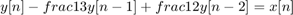 para 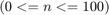.
Dada
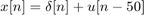 y 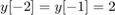
Problema 2
Resuelve el problema 3.2-7, tenga cuidado en los escalamientos horizontales.
Problema 3
Resuelva el problema 3.11-6.
Para la siguiente señal mostrada grafique las siguientes señales
(a) 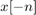
(b) 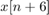
(c) 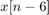
(d) 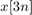
(e) 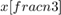
(f) 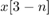
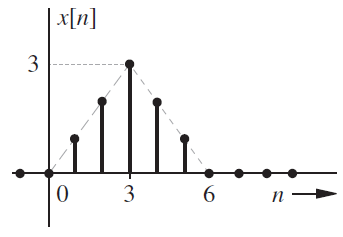
Problema 4
Con los programas desarrollados en el punto 3, resuelva 3.1-1 c) y 3.1-2 b).
Problema 5
Construya una app que permita (consultar los ejemplos preconstruidos):
- Gráficar señales en tiempo discreto reales, el usuario ingresa la definición de la señal en el formato especifico.
- El usuario puede definir el intervalo de la gráfica.
- El usuario puede seleccionar el tipo de transformación (horizontal, vertical o combinación) que desee realizar a la señal, la app deberá mostrar la gráfica de esta transformación.
- Se adjunta una imagen de la app a la práctica, y el archivo de la app.
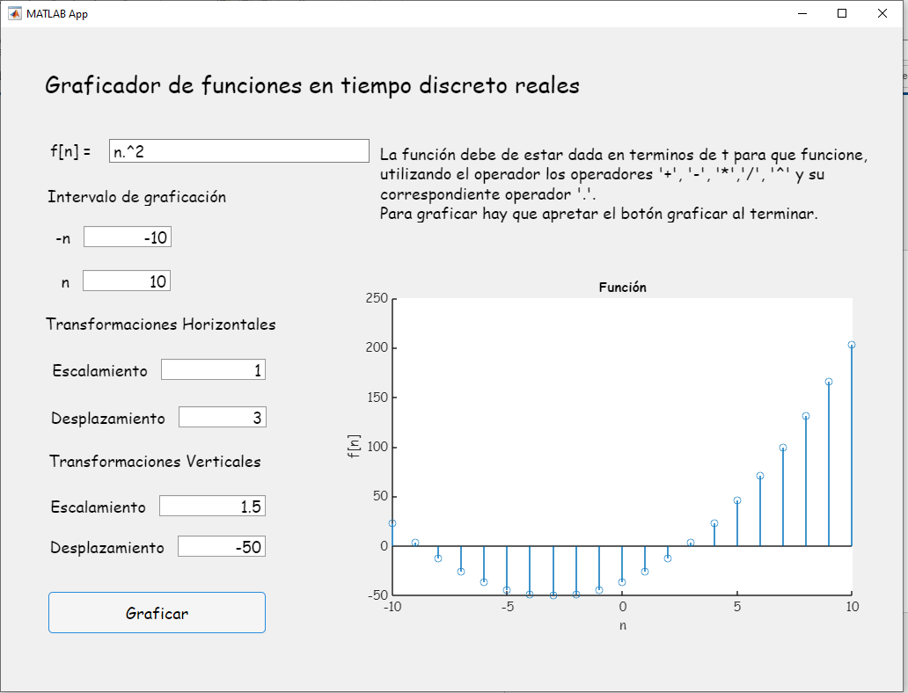
%